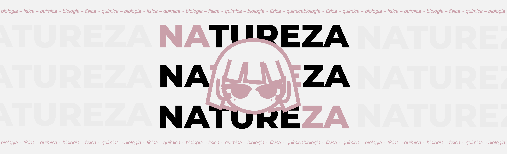
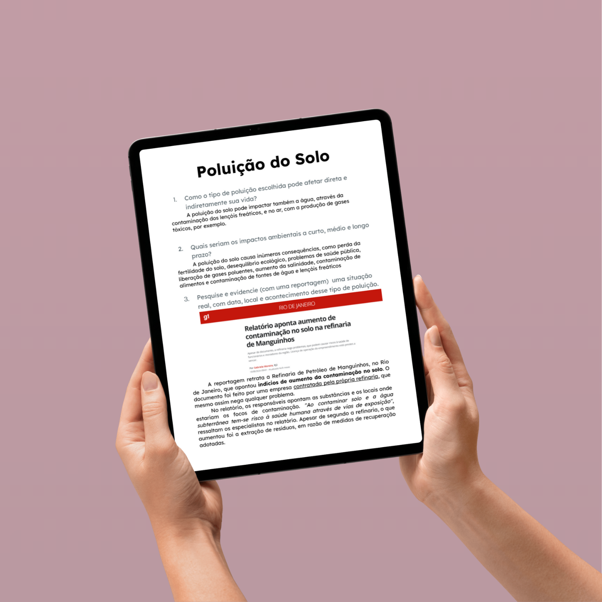
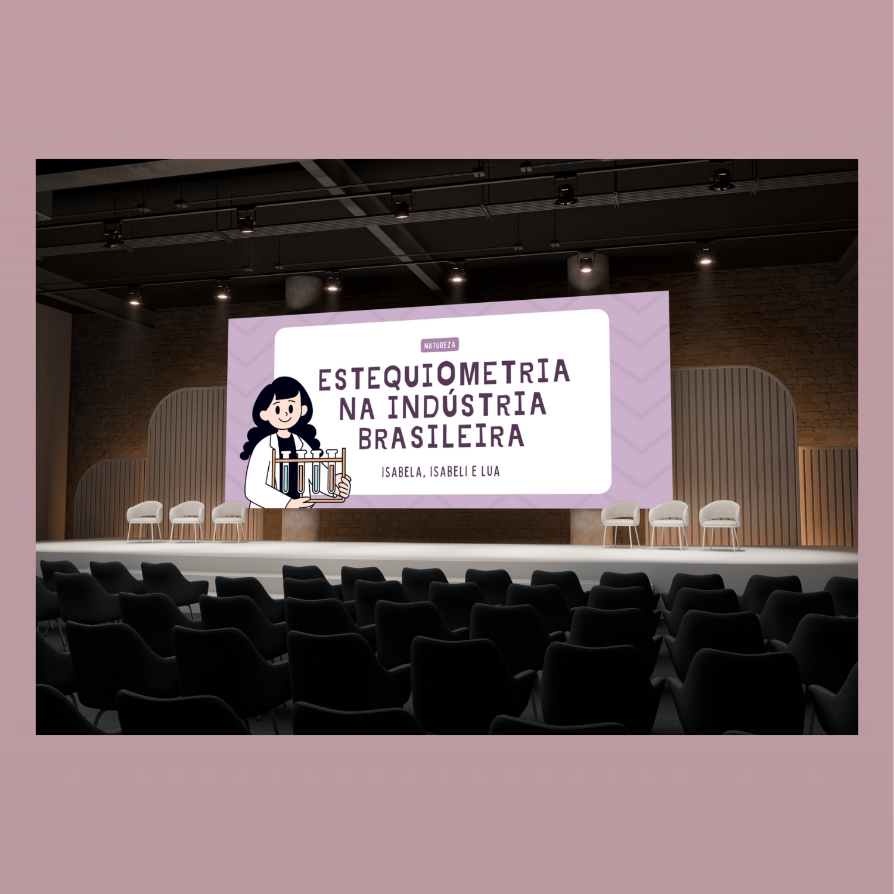
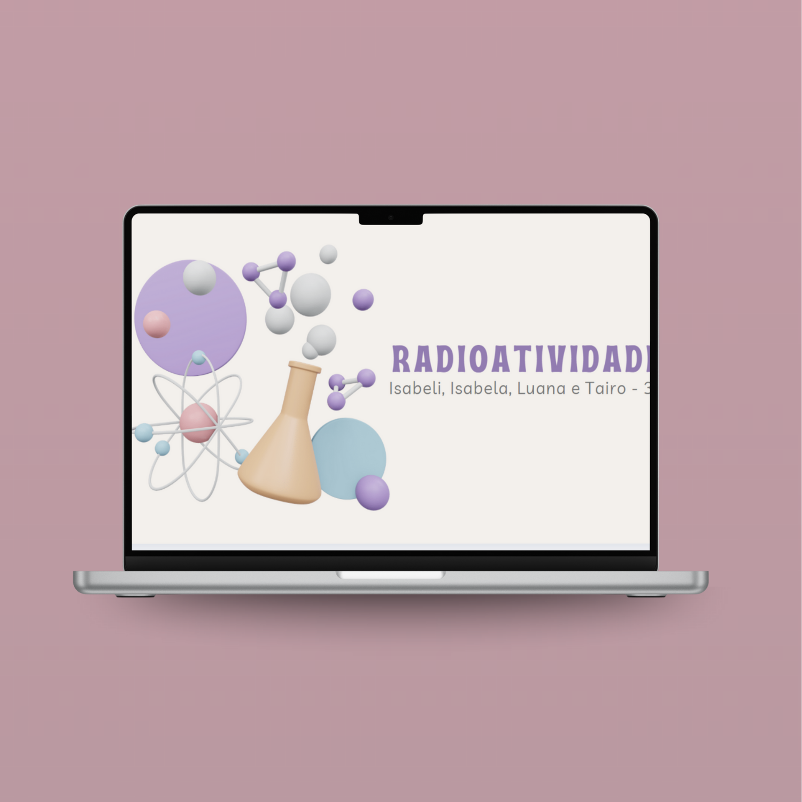
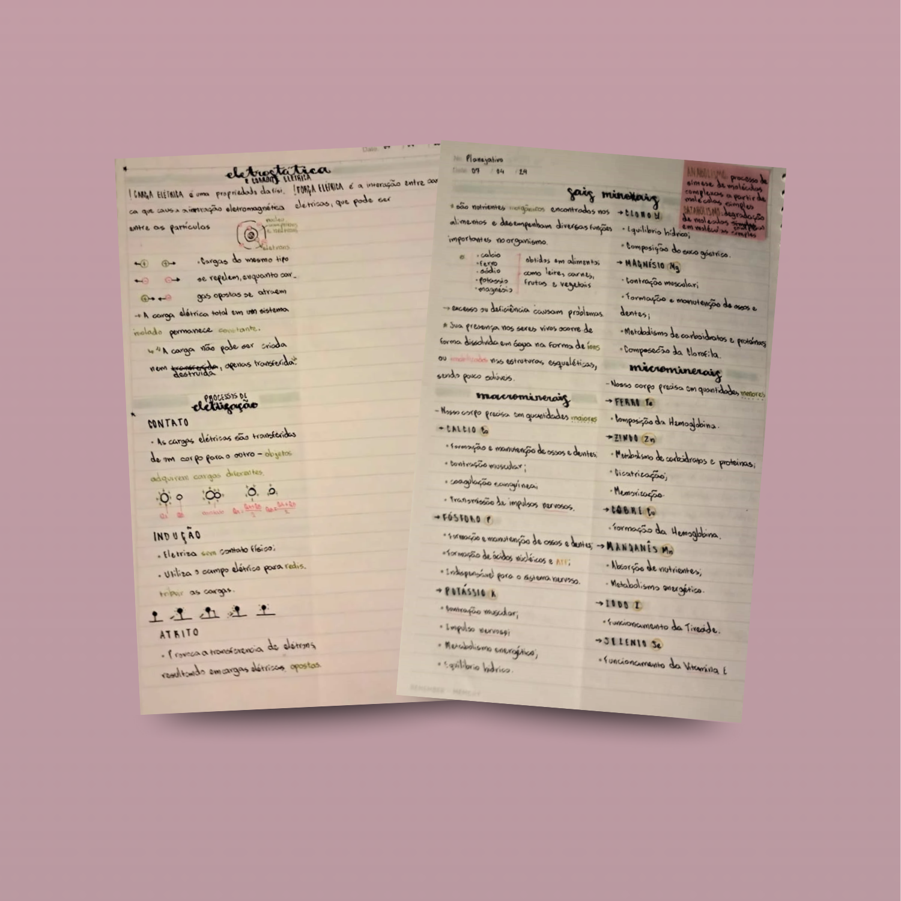
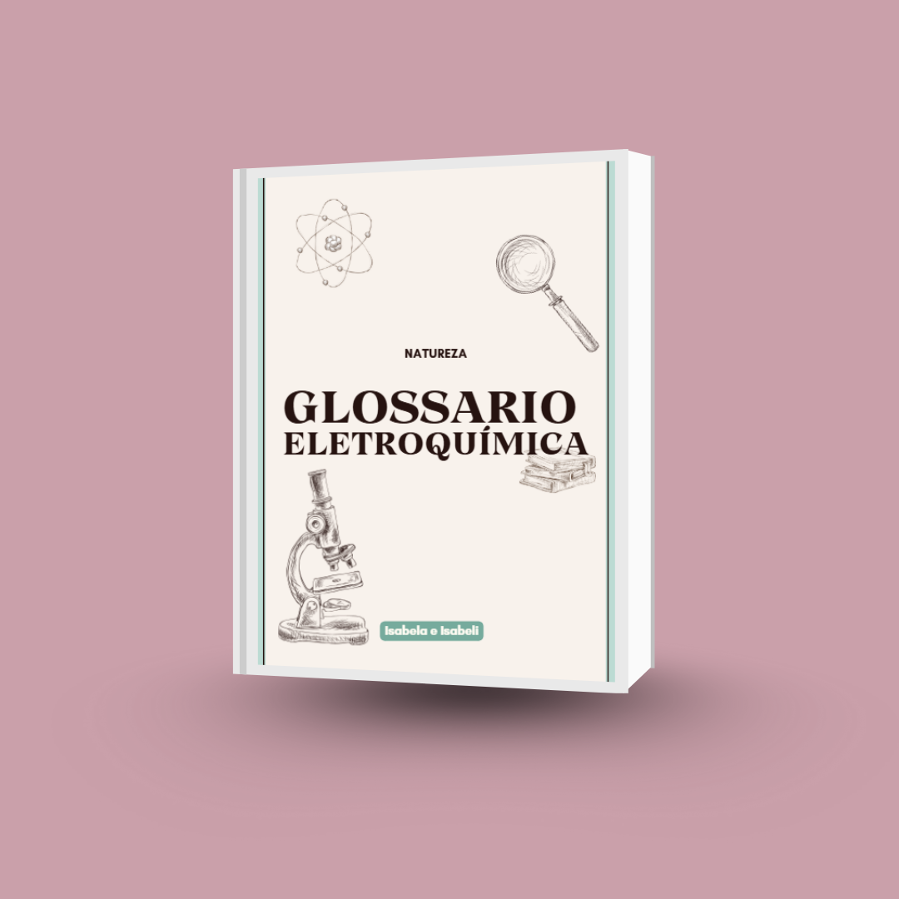
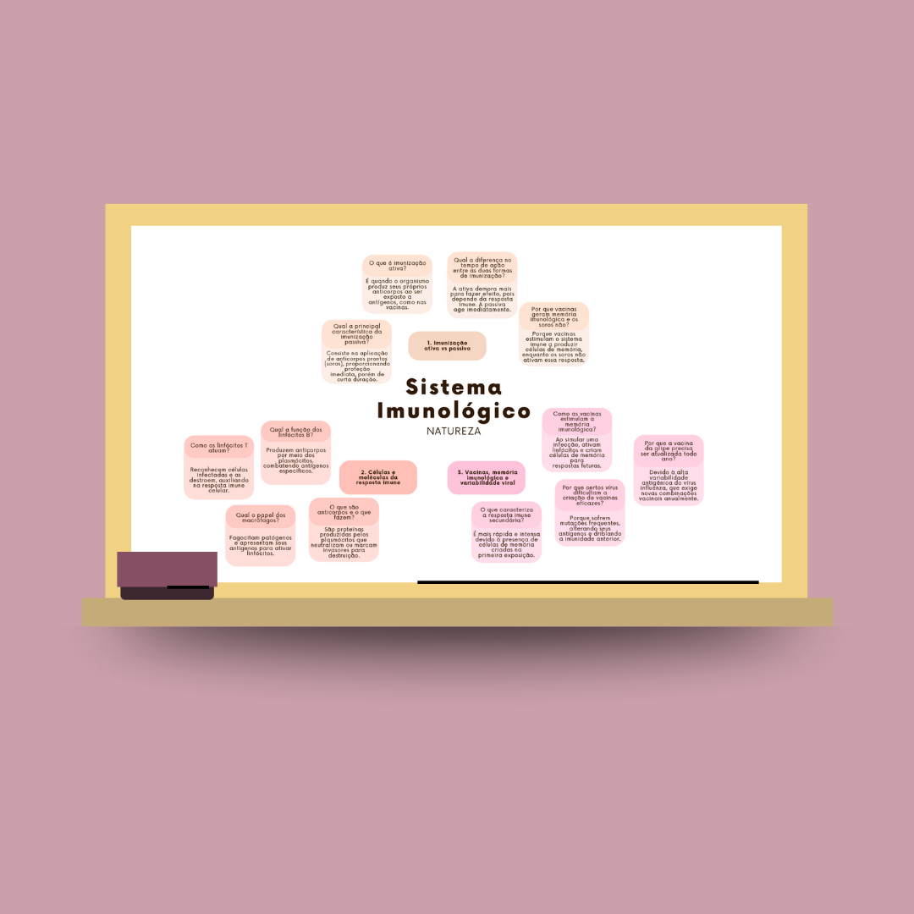
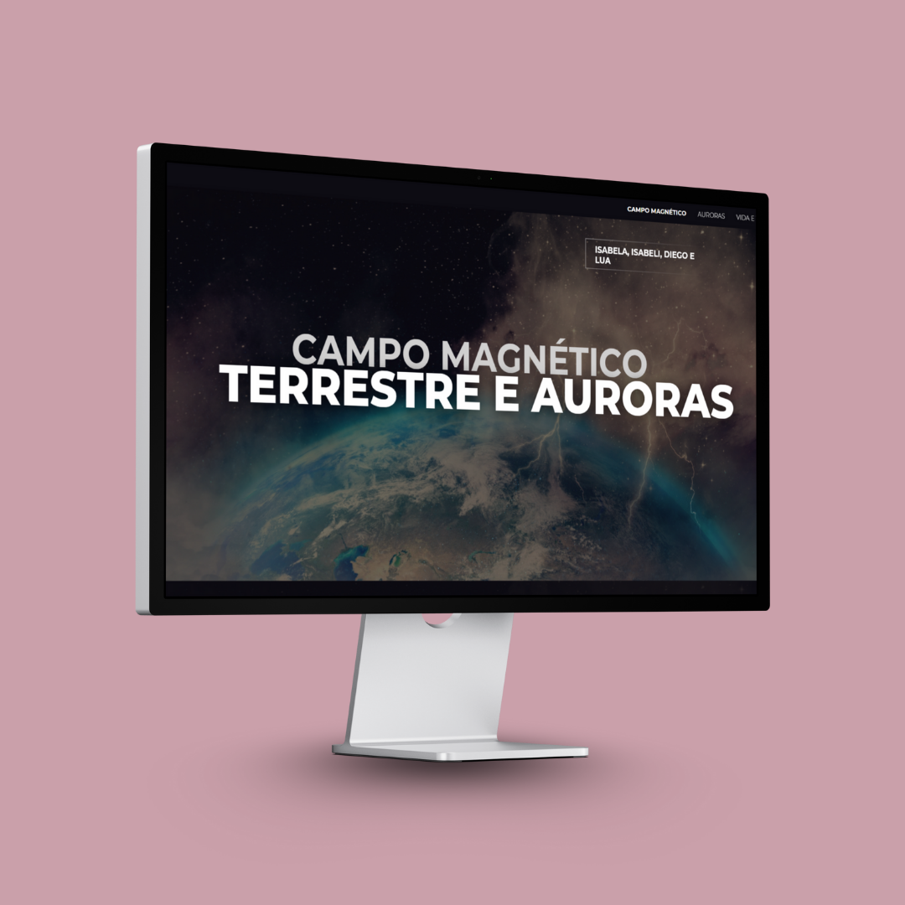
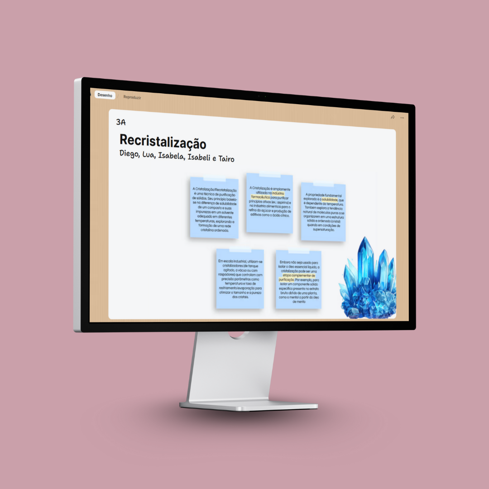
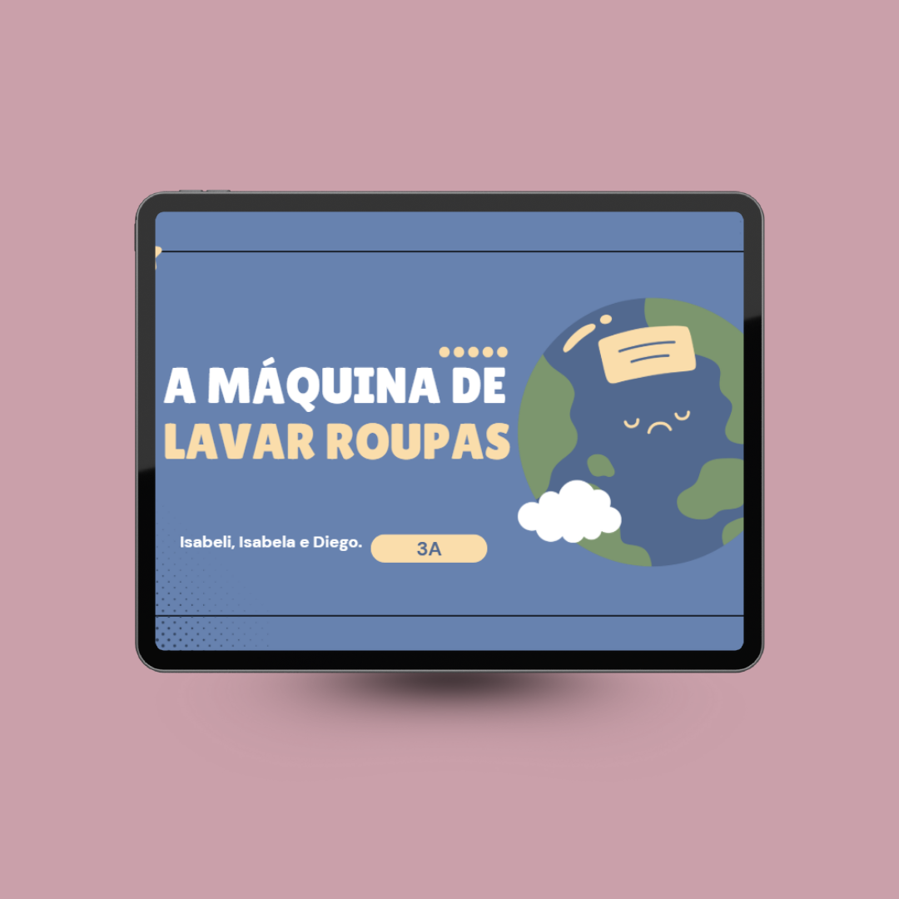

Realizamos uma pesquisa sobre poluição, após analisar imagens e sobre sinais de poluição na natureza.

Teve como objetivo criar uma apresentação na plataforma "Canva" sobre os estudos e pesquisas realizados sobre Estequiometria e a Indústria Brasileira.

Criamos uma apresentação na plataforma "Canva" sobre os estudos e pesquisas realizados sobre Radioatividade

Resumo sobre eletrostática, sais minerais e início das Leis de Ohm

Esta atividade foi um exercício completo de síntese e comunicação científica. Para cada um dos 28 termos (como Lei de Ohm, Eletrólise e DDP), pratiquei a habilidade de traduzir conceitos complexos em uma linguagem acessível, visual e aplicada, conectando a teoria às invenções do mundo real.

Este mapa mental teve como objetivo decifrar os processos do sistema imunológico. Ao final, fui capaz de identificar as principais células de defesa e suas funções, explicar a diferença entre resposta imune primária e secundária, e relacionar o mecanismo de ação de vacinas e soros na prevenção de doenças.

Nesta atividade pesquisamos sobre o campo magnético da Terra, entendemos como ocorrem as auroras polares (com foco especial na aurora austral) e investigamos como tudo isso está conectado à nossa vida e tecnologia, expondo isso por meio da criação de um Canva Site
Produzir um vídeo explicando o processo de destilação por arraste a vapor utilizando plantas aromáticas.

A turma produziu um padlet cada um com um tema, o do meu grupo foi sobre recristalização

O objetivo foi produzir uma apresentação no canva sobre maquinários que utilizam energia e seus impactos no mundo